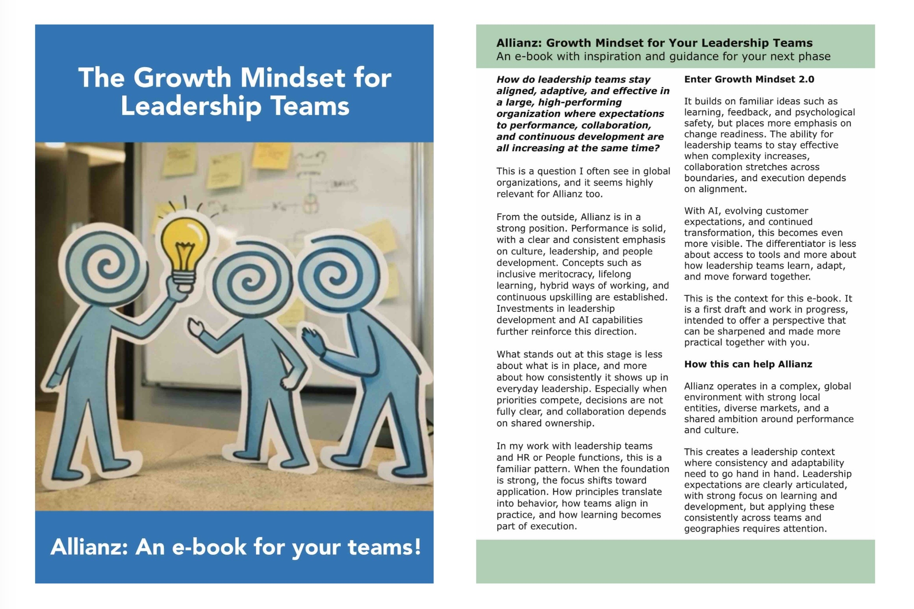

Growth Mindset 2.0 and Human + AI
These are the two main perspectives behind ChangeReadyLab. They are not meant to sit as theory on the side. They help leadership teams understand how behavior, learning, decision-making, and collaboration need to evolve in real work.
Growth Mindset 2.0
Growth Mindset 2.0 builds on the original growth mindset idea, but shifts the focus toward change readiness, leadership behavior, and how teams operate under real conditions.
The visual overview explains the basics of Growth Mindset Essentials, the mindset zones, and what this means for leadership teams in 2026.
Human + AI
AI is not only a technology topic. It changes how people work, decide, learn, share knowledge, and collaborate. That makes it a leadership and team development topic as much as a digital transformation topic.
The Human + AI perspective focuses on how leadership teams build the change readiness, habits, and ways of working needed to use AI in meaningful ways without losing sight of people, judgment, trust, and execution.
A Toolbook for Your Company
One way to make the theory practical is to turn it into a tailored toolbook for your organization. This combines short theory, practical leadership situations, Team Dynamics Card-style guidance, reflection questions, action prompts, and examples that fit your context.

The Allianz example shows how Growth Mindset 2.0 can be translated into a company-specific e-book with inspiration, guidance, leadership situations, and practical tools for leadership teams.
The same approach can be developed for your organization, using your language, priorities, leadership challenges, and internal learning needs.